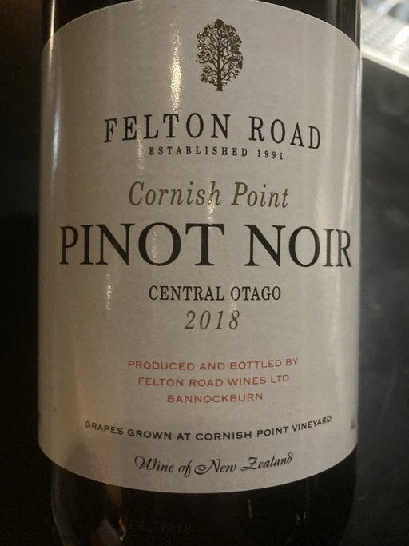
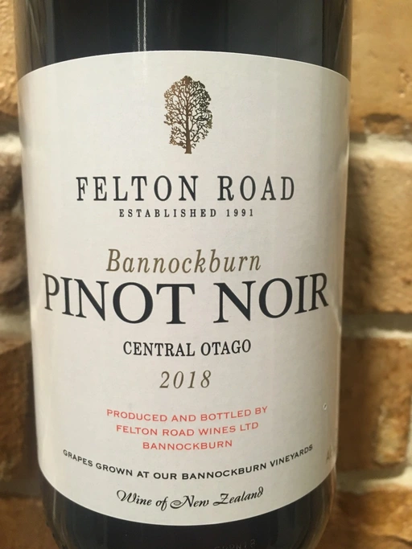
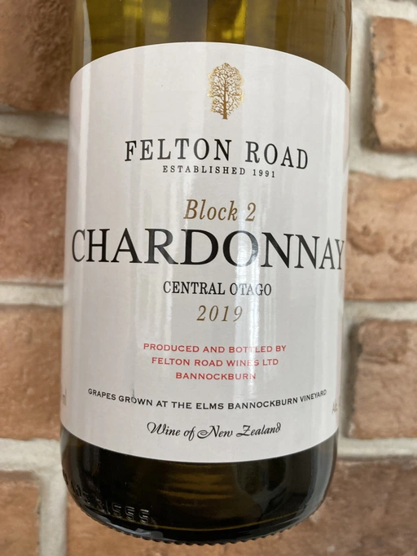
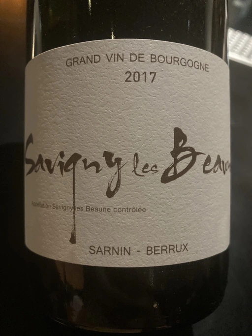

- Type
- Red Still, Dry
- Producer
- Felton Road
- Vintage
- 2018
- Location
- New Zealand, Central Otago
- Grapes
- Pinot Noir
- Alcohol
- 14
- Sugar
- NA
- Price
- 1690 UAH
- Cellar
- N/A
Ratings
2021-11-29 - 8.50
Wonderful and quaffable wine. Ripe yet restrained bouquet full of wild strawberry, raspberry, chocolate and wet earth. Fresh, well structured, almost perfectly balanced. Juicy, friendly and just delicious with flavours of wild strawberry and earthy finish.
Related

Felton Road
Bannockburn Pinot Noir - 2018

Felton Road
Calvert Pinot Noir - 2018

Felton Road
Calvert Pinot Noir - 2019

Felton Road
Bannockburn Pinot Noir - 2020

Felton Road
Chardonnay Block 2 - 2019

Sarnin-Berrux
Savigny-les-Beaune - 2017

R. López de Heredia
Viña Tondonia Blanco Gran Reserva - 2001

Domaine de la Touraize
Crémant du Jura Millésimé - 2018

Stella di Campalto
Choltempo Fiorello - NV

Marco De Bartoli
Grappoli del Grillo - 2019